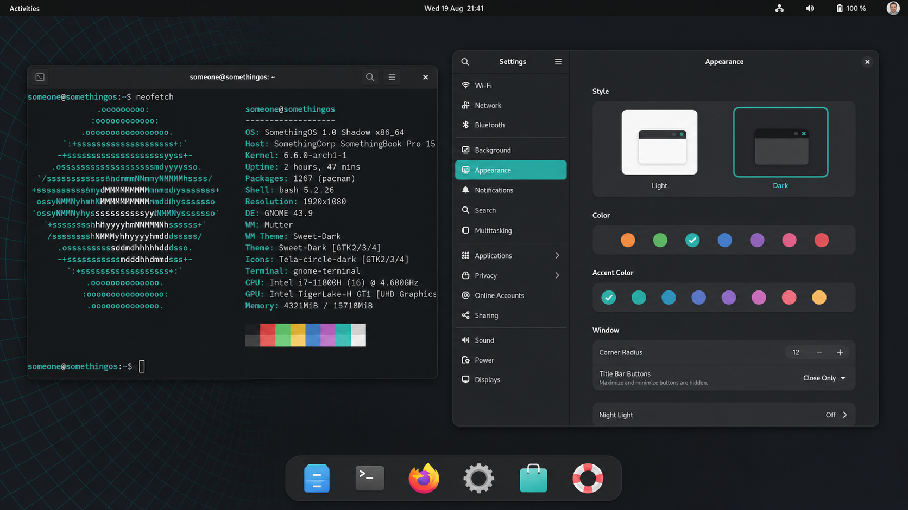
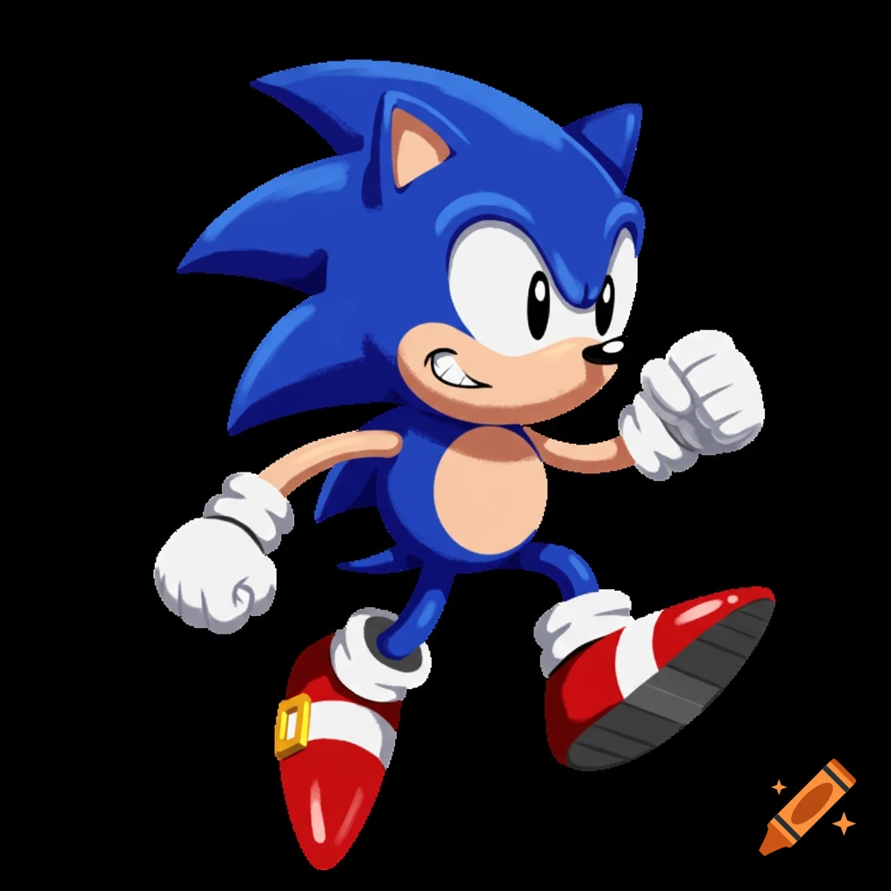
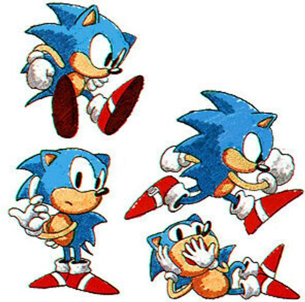
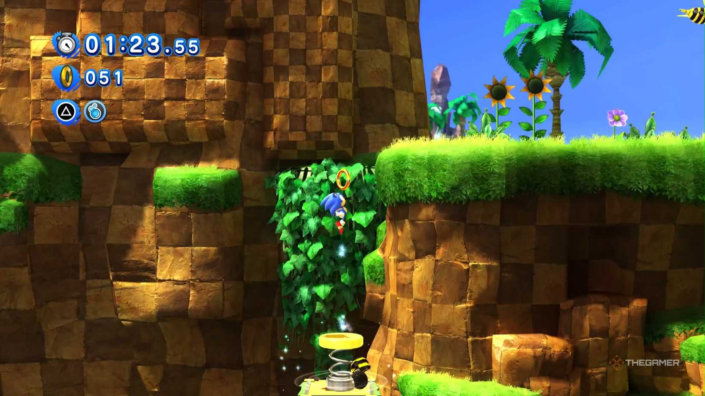

GNOME Shadow — default
GNOME 43, Adwaita dark, Inter, dash-to-dock, cyan cursor. The desktop in the screenshot and in the live session.
SomethingOS is a live, installable remix of Debian GNU/Linux.
GNOME Shadow is the default desktop. Plasma Shadow is the other official flavour.
We send your data to nothing.weforgot.

GNOME 43, Adwaita dark, Inter, dash-to-dock, cyan cursor. The desktop in the screenshot and in the live session.
make iso DESKTOP=plasma. Breeze Dark, same wallpaper, same cyan, same hardening. First-class, not a community spin.
Custom mark, JetBrains Mono, the something CLI. something fetch if you want it again.
That hostname is 0.0.0.0 in /etc/hosts.
Firefox’s telemetry server pref is locked to
https://nothing.weforgot/v1/sink.
uBlock Origin is force-installed. A WireGuard / OpenVPN stack ships on the ISO.
Popularity-contest does not.
Debian package webext-ublock-origin-firefox plus a locked Firefox policy. You can add filters. You cannot “accidentally” lose it.
WireGuard, OpenVPN, and the NetworkManager plugins. something vpn up when you drop a conf in /etc/wireguard/.
A hedgehog, some rings, dirt if you miss. High scores stay on the machine. Obviously.
They live in ~/Pictures/sonic. something sonic opens one at random. The live session also just… puts them on the wallpaper.



On Fedora: Actions → SomethingOS ISO → Run workflow. Or make iso-container with podman. live-build stays inside Debian, where it belongs.
# GitHub Actions, any laptop Actions → SomethingOS ISO → Run workflow # Fedora sudo dnf install podman make iso-container # Debian host make iso # GNOME Shadow make iso DESKTOP=plasma # Plasma Shadow